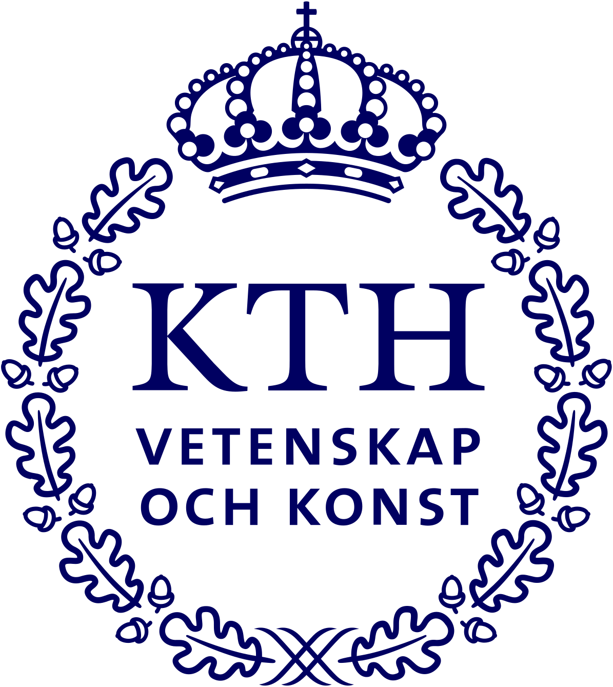

Projects
Search all 19


Process design
Ni–Cd battery recyclingCatalytic reactor modellingNickel sulfate plantCollagen process and plant designNi–Cd Tutton phase equilibriaAmmonium nitrate plant designBattery modelling
Solid-state cathode transportBattery lifetime modellingFast-charging and thermal modellingMaterials
Cooling fracture in basaltAnalysis
Bisphenol and phthalate analysisSoftware
AURAPublications
2026 · Submitted
High-lithiation diffusivity continuation couples surface enrichment and reaction redistribution to predicted charging limits
X. Zhang · Ionics
2026 · Submitted
Diffusion can reverse concentration-heterogeneity rankings of matched contact-loss patterns in a reconstructed solid-state cathode
Xinyu Zhang, Jingyu Lu, Zheyu Ye · Journal of Solid State Electrochemistry
Xinyu Zhang and Jingyu Lu share first authorship.
About

KTH Royal Institute of Technology
MSc, Chemical Engineering for Energy and Environment
2025–2027 (expected)
The University of Queensland
BE (Honours), Chemical Engineering
2021–2025
Sichuan Meifeng Chemical Industry
Control-room intern · Dec 2024 – Feb 2025
Unitywater
Inspection department intern · Jun – Aug 2024
COMSOL · Python · Aspen · ICP-OES · XRD · SEM-EDS · LC-MS / GC-MS